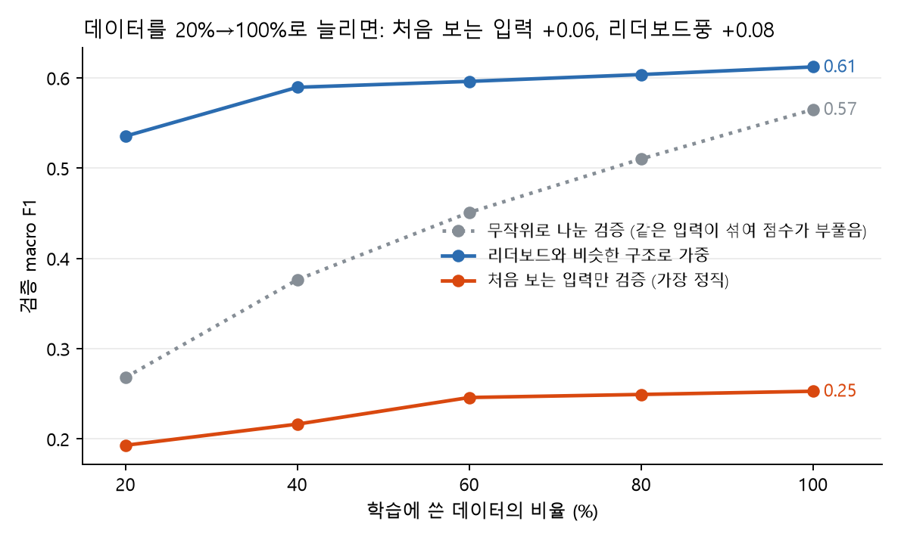
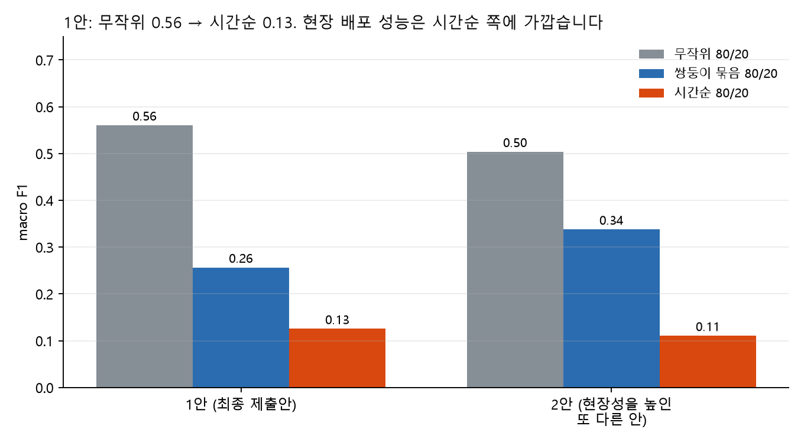
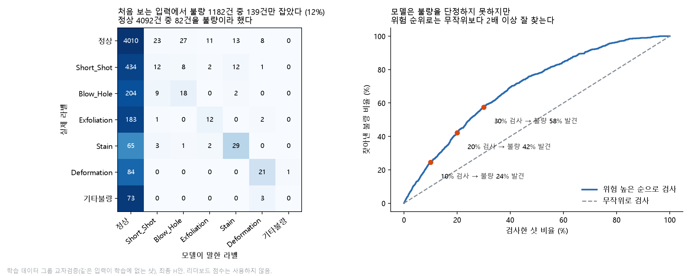

python main.py 한 줄, CPU 약 80초. 중간 리더보드 점수 0.5987(공개 기준선 0.2517).| 문제 | 확인한 수치 | 처리와 이유 |
|---|---|---|
| 식별·상수 열 | shot_id·id·Shot 3개, Min/Max 상수 8개 | 제거(식별 열은 규칙상 특징 불가, 상수는 정보 없음). 32열 → 21열 + 표시 열 4개 = 25개 |
| 결측 | 공장 온도·습도 90행(전부 제품 유형 2, 두 덩어리) | 앞뒤 실측 30개씩의 중앙값으로 채움 + 결측 표시 열. 방식·창 크기 간 점수 차 0.004(표준편차 0.03 이내) |
| 이상한 값 | 속도 0·긴 사이클(설비 정지로 보임), 이상치 15행 | 지우지 않고 표시 열만 추가. 지워도 점수 차가 표준편차 안쪽 |
| 중복 행(쌍둥이) | 입력 21개가 앞 행과 같은 행 3,174개(42%), 같은 묶음 안 라벨 일치 97.8% | 행은 유지하고 묶음 번호를 검증 분할에만 사용(특징 아님). 시험 데이터도 58%가 같은 구조 |
| 클래스 불균형 | 정상 77.6%, 기타불량 76건·Stain 100건 | class_weight(balanced의 0.5제곱). 정확도가 아닌 macro F1 사용 |
| 제품·시기 교란 | shot 4208에서 제품 전환, 불량 종류가 제품·시기에 몰림(400샷 블록 불량률 1.8~51%) | 검증을 묶음·시간순으로 따로 측정(6절), 원인 분석은 제품 유형별로 수행(8절) |
입력 25개 → 은닉 128 → 64 → 출력 7, 활성화 ReLU(음수는 0으로 막아 단순한 꺾은선 조합으로 비선형을 표현), 드롭아웃 0.2(과적합 방지), 손실은 클래스 가중 교차엔트로피(희귀 불량을 놓치지 않게), Adam 학습률 1e-3(기본값에서 시작, 손실이 안정적으로 내려감), 가중치 감쇠 1e-4. epoch는 검증 손실이 최저인 18에서 멈춘다(그림 1). 입력은 학습 구간 평균·표준편차로 표준화.

| 모델 (쌍둥이 묶음 검증, 새 입력) | macro F1 | 비고 |
|---|---|---|
| 공개 기준선(로지스틱 + class_weight, 강사 제공) | 0.2517 | 리더보드 구조 |
| 로지스틱 / RF / HGB (잎 10) | 0.287 / 0.326 / 0.305 | 새 입력만 맞히는 어려운 검증 |
| MLP | 0.277(탐지율 54%) | 리더보드 구조에서는 0.289로 트리(0.58)보다 훨씬 낮음 |
MLP가 리더보드 구조에서 낮은 이유: 시험의 58%는 학습에 같은 입력이 있는데 트리는 이를 외워 93% 맞히고 MLP는 외우지 못한다. 반대로 새 입력에서는 MLP(0.277)와 트리(0.279)가 같다. 즉 점수 차는 모델 품질이 아니라 "같은 입력을 외울 수 있는가"에서 나온다.
| 바꾼 것 | 결과 | 해석 |
|---|---|---|
| ① 앞뒤 사건 입력값 특징 (없음 → 40개) | +0.0045 (앞만 −0.0002, 뒤만 −0.0015) | 유일하게 일관된 이득. 앞뒤 샷의 공정 상태가 현재 샷의 불량과 이어진다고 해석. 라벨은 쓰지 않음 |
| ② 클래스 가중치 강도 (0.3 / 0.75 / 1.0, 기본 0.5) | −0.0002 / +0.0006 / −0.0007 | 노이즈 → 0.5 유지. 강하게 줄수록 탐지는 늘지만 헛경보도 늘어 점수는 그대로 |
| ③ 잎 크기 (최소 샘플 1 → 2) | 0.608 vs 0.610 | 동일 → 1 유지(탐지 57.4%, 정확도 87.2%) |
이 밖에 나무 수 900, max_features, 부트스트랩, 이웃 ±2~3, 시기 군집, 클래스별 탐지기, SMOTE식 보강, 이동평균 등 20여 가지를 시험했으나 모두 ±0.005 이내였고(시드 흔들림 0.005), 어떤 조합도 시험 데이터 예측이 시드에 따라 평균 3행(0.1%) 넘게 바뀌지 않았다. H가 평평한 정점이다.

결론: 데이터를 더 모으면 "이미 본 조건"의 점수는 오르지만 새 조건의 점수는 거의 안 오른다. 새 조건을 잡으려면 데이터 양보다 불량과 정상을 가르는 새 측정이 필요하다. 가정 기반 계산(불량 샷에서 평균 d 표준편차 높은 가상 측정을 추가, 실제 결과 아님): d=0.5는 점수 0.268→0.269로 변화 없고, d=1이면 0.297, d=2이면 0.400(탐지율 14%→41%). 구분력이 표준편차의 약 1배 이상인 측정을 찾아야 의미가 있다.

| 모델 | 무작위 80/20 | 쌍둥이 묶음 80/20 | 시간순 80/20 |
|---|---|---|---|
| 로지스틱 | 0.288 | 0.290 | 0.097 |
| RF | 0.530 | 0.322 | 0.124 |
| 최종(H) | 0.560 | 0.256 | 0.125 (탐지 0%) |
| MLP | 0.299 | 0.292 | 0.125 |
외우는 모델일수록 무작위에서 부풀고, 시간순에서는 모든 모델이 "전부 정상"(0.125)에 가깝다. 현장 배포 성능에 가까운 쪽은 시간순이다. 리더보드는 시험 샷이 생산 순서에 섞여 있어 무작위 쪽에 가깝다. 시간순 구간(shot 6009~7535)은 전부 제품 유형 2이고 학습에 이 제품이 1,269행뿐이어서 "새 시기의 같은 제품"을 거의 못 본 시험이다. 그러므로 최종 점수(private 1,131행, 흔들림 SD 약 0.03)를 현장 성능으로 읽으면 안 된다.
가정(현장 자료가 없어 가정, 현장 값으로 교체해야 함): 하루 500샷, 불량률 22.4%(학습 데이터에서 계산, 처음 보는 입력 기준)이면 하루 불량 약 112건·정상 약 388건. 비용은 금액이 아니라 비율로 둔다: 헛경보(정상 샷을 불량으로 불러 한 번 더 검사) 1건 = 1, 놓친 불량 1건 = 5·10·20. 10배는 품질비용 이론의 "1-10-100 경험 법칙"(검사·재작업 대비 고객에게 나간 불량의 비용이 약 10배)을 참고한 가정이고, 5배·20배로 바꿔 결론이 유지되는지 본다. 결정 기준은 정상 확률에 곱하는 배율(작을수록 불량으로 더 자주 부른다, main.py의 ALERT_NORMAL_SCALE). 아래 건수는 학습 데이터 검증(처음 보는 입력, 시드 4개 평균)이며 리더보드 점수는 쓰지 않았다.
| 결정 기준 | 하루 검사 대상 | 놓침 | 헛경보 | 총비용 5:1 | 총비용 10:1 | 총비용 20:1 |
|---|---|---|---|---|---|---|
| 검사 안 함 | 0 | 112 | 0 | 560 | 1,121 | 2,241 |
| 정상 ×1.0 (제출 CSV 기준) | 20 | 100 | 8 | 507 | 1,007 | 2,005 |
| 정상 ×0.5 | 78 | 74 | 40 | 412 | 784 | 1,528 |
| 정상 ×0.3 | 155 | 49 | 92 | 336 | 581 | 1,069 |
| 정상 ×0.2 | 226 | 33 | 147 | 310 | 474 | 801 |
| 정상 ×0.1 | 339 | 11 | 238 | 295 | 352 | 466 |
| 정상 ×0.05 | 399 | 4 | 291 | 312 | 332 | 373 |
| 전수 검사 | 500 | 0 | 388 | 388 | 388 | 388 |
고른 운영안: 정상 ×0.1(하루 339샷 검사, 놓침 11건, 헛경보 238건). 5:1에서 최저(295, 전수 검사 대비 24% 절감), 10:1에서 352(전수 검사 대비 9% 절감, 최저 ×0.05와 6% 차이), 20:1에서 466(전수 검사보다 높음)이다. 결론은 비용 비율에 민감하다: 5:1이면 모델 기반 운영이 전수 검사보다 분명히 싸고, 10:1이면 이점이 10% 안팎으로 줄며 샷의 70~80%를 검사해야 하고, 20:1이면 전수 검사와 구별되지 않는다. 처음 보는 입력에서 불량을 구분하는 정보 자체가 약하기 때문이다(AUC 0.75). 그러므로 이 모델은 놓침이 아주 비싼 현장보다 비용 비율이 낮은 현장, 또 같은 조건이 반복되는 라인(제출 CSV 기준 ×1.0이 가장 잘 맞는 구성)에 적합하고, 현장이 비용 비율을 정해 주어야 기준이 확정된다. 건수는 놓침·헛경보만 센 것이며 종류를 틀린 건과 종류별 비용 차이는 넣지 않았다. 제출 CSV(가장 높은 확률의 라벨, 정상 ×1.0)와 운영안(정상 ×0.1)은 다르다: CSV는 macro F1을 높이려는 7종 분류이고(×0.1로 낮추면 리더보드풍 점수가 0.62에서 0.49로 내려간다), 운영안은 놓침 비용을 반영해 불량을 더 자주 부르는 기준이다. 보조로 위험(1−정상 확률) 순 상위 20~30%만 검사하는 방식도 있다(그림 4, M=3에서 최저).

방법: 불량 종류마다 "그 종류인가 아닌가"로 RF를 따로 학습하고 처음 보는 입력에서 순열 중요도로 중요한 조건을 뽑은 뒤(그룹 CV AUC: Short_Shot 0.75, Blow_Hole 0.90, Exfoliation 0.83), 그 조건을 구간으로 나눠 구간별 불량률을 직접 셌다. 제품 유형이 불량 종류를 가르므로 유형별로 셌다. 괄호는 Wilson 95% 신뢰구간.

| 불량(대상) | 조건 구간 | 구간 안 | 구간 밖 | 구간 비중 |
|---|---|---|---|---|
| Short_Shot (유형 2, 2,324행) | High_Velocity > 2.537 | 5.3% (3.7~7.4) | 15.8% (14.2~17.6) | 24% |
| Blow_Hole (유형 2) | High_Velocity > 2.543 | 0.7% (0.2~1.9) | 12.3% (10.9~13.9) | 20% |
| Blow_Hole (유형 2) | Coolant_Temp ≤ 26.4 | 23.4% (20.0~27.3) | 6.2% (5.2~7.4) | 22% |
| Exfoliation (유형 1, 2,950행) | Spray_Time > 8.1 | 1.8% (1.2~2.7) | 9.8% (8.5~11.2) | 38% |
| Short_Shot (유형 1) | Melting_Furnace_Temp > 711 | 2.6% (1.7~4.0) | 6.4% (5.5~7.5) | 25% |
현장 제안: "유형 2 제품에서 High_Velocity를 2.537 초과 범위로 관리하면 Short_Shot이 15.8%에서 5.3%, Blow_Hole이 12.3%에서 0.7%로 줄 가능성이 있다. 유형 1 제품에서 Spray_Time이 8.1을 넘는 샷은 Exfoliation이 9.8%에서 1.8%였다."
AI(Claude)를 코드 작성·실험 설계·결과 해석 보조에 사용했고, 숫자는 모두 직접 실행해 확인한 값만 보고서에 썼다. 무엇을 물었고 무엇을 검증해 기각했는지:
| AI 조언 | 검증 결과 |
|---|---|
| "쌍둥이의 라벨을 그대로 찾아 쓰면 0.65~0.70까지 오른다" | 모의 계산으로 약 0.58에 그침(직접 계산해 기각). 규칙상 이웃 라벨은 쓸 수도 없어 이웃 입력만 특징으로 채택 |
| "내부 점수(리더보드풍)가 리더보드를 예측한다" | E·F·H 모두 실제 public보다 0.003~0.012 높았고, 1회차만 0.026 낮았다. 낙관 편향을 보정해 해석하고, 내부 점수로 순위를 예측하지 않음 |
| "이동평균·순번 특징·클래스 보정으로 +0.005" | 시드·표본 흔들림(0.005~0.03)보다 작거나 규칙 회색지대라 채택하지 않음. 순위 예측("상위권")도 근거가 없어 철회 |
| "탐지율을 올리면 점수도 오른다"(잎 3·5, SMOTE식 보강) | 탐지율 63~67%로 올랐지만 점수는 0.6125→0.6033 등으로 내려감. 헛경보가 늘어 정확도·정밀도가 깎임(맞바꿈) |